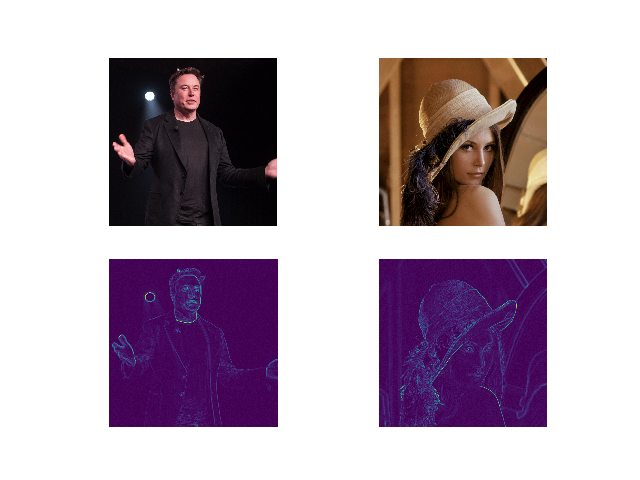

In this short post, we take a look at how we can use pyautocv for edge detection. At the time of writing, pyautocv was at version 0.2.1 that was unreleased.
For installation details, please see the documentation of the project.
Pre-requisites
- Python >=3.6
- pyautocv
- An image directory for which detection is required.
To begin, we import pyautocv’s Segmentation class.
from pyautocv.segmentation import *
Next, we change directory to the target directory that holds our images. This can be skipped. It is done simply for convenience.
import os
os.chdir("path_to_directory_with_images")
We then create an obejct of class Segmentation:
for_edge_detection = Segmentation("images")
Finally we can call the target methods and use show_images to show both the original and modified images.
show_images(for_edge_detection.read_images(),for_edge_detection.detect_edges(operator="roberts"))
Sample results from the above:

This was meant to be a very brief post. Please see more documentation at the project’s homepage.
If you have any criticism or feedback for this post or any of my content, please do not hesitate to contact me. I always love having a chat about my or anyone else’s work.
Thank you!